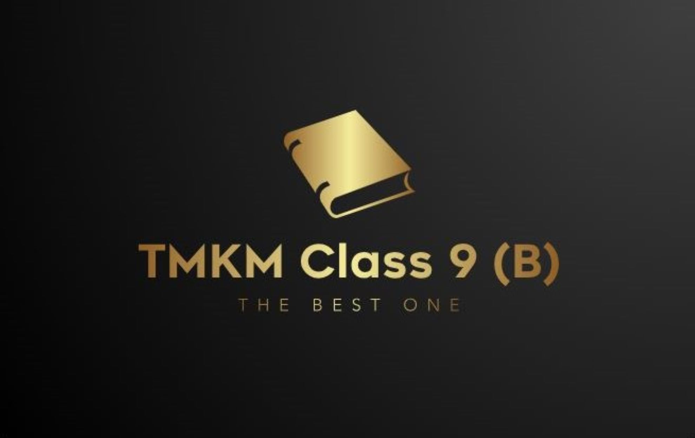

TMKM Class 9(B)

Welcome to Our Class
Your journey starts here!
তামিরুল মিল্লাত কামিল মাদ্রাসা বাংলাদেশের একটি ধর্মীয় উচ্চ শিক্ষা প্রতিষ্ঠান। তামিরুল মিল্লাত ট্রাস্ট পরিচালিত মাদ্রাসাটি দেশের সব মাদ্রাসার মধ্যে শীর্ষ ফলাফলের স্থান দখলের পাশাপাশি ঢাকা বিশ্ববিদ্যালয়সহ দেশের সব নামকরা বিশ্ববিদ্যালয়ের প্রবেশিকা পরীক্ষায় ভালো ফলাফল করতে দেখা যায়। এই ওয়েবসাইটটি এই প্রতিষ্ঠানের ৯ম শ্রেণীর খ শাখার জন্য। আমরা আশা করি আমাদের সকল সহপাঠীরা এই ওয়েবপেইজটি পছন্দ করবে এবং এটি তাদের জন্য দরকারী হবে।
অনুগ্রহ করে এই https://tmkmclass9b.github.io/tmkmclass9b.com/home.html হোমপেজের লিঙ্কটি সংরক্ষণ করুন বা এটি বুকমার্ক করুন, যাতে আপনি প্রতিবার লগ ইন না করেই আমাদের ওয়েবসাইটটি দেখতে পারেন
Check Our Class Routine